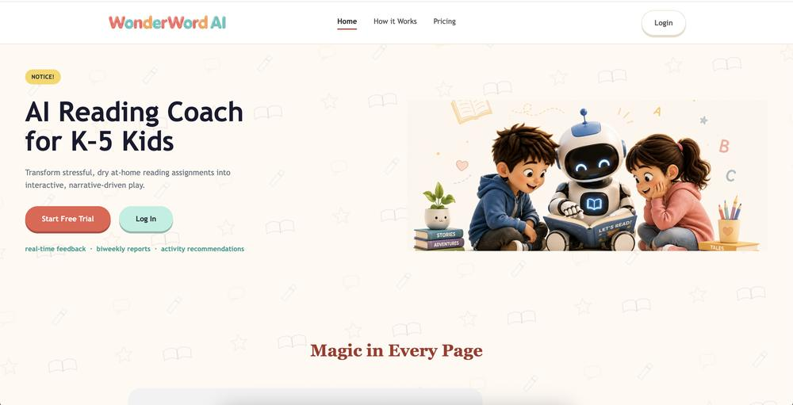
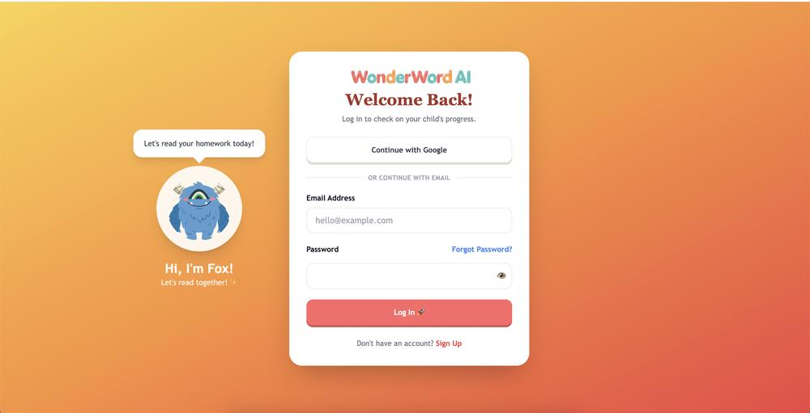
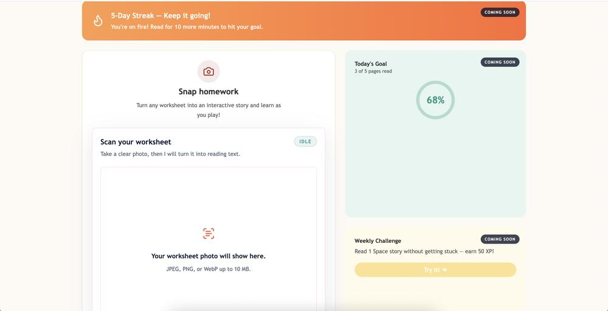
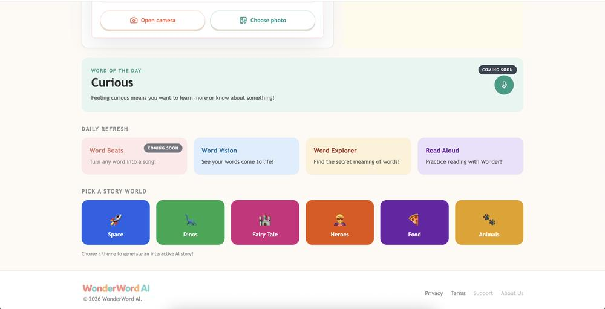

Context and target user
WonderWord AI is a reading coach for K–5 students and their parents. Instead of asking a family to adopt yet another content library, it starts from the worksheet the school already sent home: a child or parent photographs the page, the child reads it aloud with karaoke-style highlighting, and missed words become short, guardrailed stories.
The product has two users with different jobs. The child needs reading to feel like an adventure rather than a test. The parent — who pays — needs to see where the child is actually stuck, without adding screen time.
The source portfolio also states that one in three US kids struggles with reading in early grades; no citation is given there, so it is not used as evidence on this page.
Problem and evidence
Every existing reading app works inside its own content library instead of the homework already in the backpack. Homework time becomes a nightly power struggle, and parents have no clear view of where their child is stuck.
Real homework beats a library
Parents photograph the worksheet the school assigned rather than adopt another content library. Confirmed in discovery — parents were already photographing homework into ChatGPT, a tool never built for children.
50+ voice-of-customer interviews
Used to shape and price the three-tier freemium model.
My role and team
Co-founder and Product Lead, August 2026 – present.
- Lead product strategy and roadmap across three MVPs through March 2027.
- Manage a cross-functional team of 8 engineers plus 2.5 FTE hires.
- Established product processes, metrics tracking in Amplitude and Mixpanel, and go-to-market.
- Designed the three-tier freemium model with annual billing.
Constraints
- Children’s privacy and safety. COPPA is treated as the specification, not a policy page added afterward. Every AI-generated story must pass content-safety checks before a child sees it.
- Speech recognition on developing voices. Word-recognition error must stay below 10% on developing child phonetics; above it, the product tells children they are wrong when they are right.
- Real-world capture. OCR has to cope with crumpled, glared, third-generation photocopies — capture to interactive text within a 3-second budget.
- Reading sync. Karaoke highlighting held to a maximum of 200 ms sync latency.
- Story limits. Correction stories stay under a third-grade Flesch-Kincaid ceiling, within 40 words, using known vocabulary, with a minimum validation score of 90.
- Time. Concept to beta in four weeks; the teacher-portal decision references an eight-week MVP window.
Product hypothesis
If WonderWord AI holds word-recognition error below 10%, then K–5 students read more confidently, parents feel measurably less homework stress, and families pay for it.
The error rate is the load-bearing number. Every architecture decision downstream, from Wav2Vec2 confidence scoring to the four-layer story guardrails, exists to defend that threshold. The bet breaks into three hypotheses, each at a different level of evidence:
Real homework beats a library
Confirmed in discovery — parents were already photographing homework into ChatGPT.
Story beats a red X
Children accept correction delivered as a two-sentence story rather than an error state. Strong signal in moderated sessions; needs unmoderated beta data to confirm at scale.
Off-screen retention
A weekly report plus one physical game sustains parent engagement without adding screen time. Measured in private beta through the Activity Action Rate.
Families pay
The free tier converts to a paid coaching tier. Pricing is modeled; see projections below.
Alternatives and tradeoffs
Teachers in the MVP?
Options considered: build the teacher portal in the MVP; build a read-only teacher view as a compromise; or defer teachers until consumer demand is proven. Chose to defer. Classroom rostering, district procurement and FERPA scope would have consumed the entire MVP window before a single family proved the core loop works. Teachers are the better long-term business and the slower one to reach.
Monthly before annual billing
Monthly pricing ships first so the $9.99 point is validated against real conversion before a discount is layered on. Annual arrives in month three, once product-market fit is evidenced. An annual cohort bought before fit just locks in churn you have not yet earned the right to prevent.
Where personalization lives
Theme choice is the personalization lever that costs nothing at inference time: the same guardrailed generation, wrapped in whatever the child already likes.
Sign-in
Google for parents who want speed, email for parents who do not want another OAuth grant.
Key decisions
- No red X. A miscue triggers a two-sentence story starring the missed word, validated by four guardrails — vocabulary, complexity, content safety and structure — before it is ever shown. Below a score of 90 the child sees a pre-written fallback; a child never sees a validation error.
- Story validation as the P0 engineering risk, ahead of OCR accuracy, because the miscue moment decides whether the child comes back.
- Wav2Vec2 confidence scoring to defend the 10% word-recognition error ceiling.
- Daily Active Scans as north star, because it separates the two failure modes early: model accuracy versus parent habit.
- Family-first freemium, priced against tutoring rather than against other apps.
Try the story guardrail checker and pricing simulator in the playground →
Shipped experience




Six stages from backpack to parent report
The emotional curve matters more than the funnel. A six-year-old who feels stupid does not come back tomorrow. Choose a stage.
Pain.
Intervention.
The low point is the whole product
Miscue is the make-or-break stage. Every other stage can be merely good. If correction lands as failure, the child disengages and no dashboard saves the account. The four-layer guardrail system exists to protect this one moment, which is why story validation, not OCR accuracy, was the P0 engineering risk.
Evaluation and success metrics
- North star: Daily Active Scans.
- Model quality gate: word-recognition error below 10% on developing child phonetics.
- Story gate: validation score of at least 90 across four checks; failures and scores are logged.
- Parent engagement: Activity Action Rate, measured in private beta.
- Progress signal for parents: WCPM trend and a phonics deficit map, shown after three sessions.
- Analytics: Amplitude and Mixpanel.
What would falsify this
If beta families hit the error target and still churn by week two, the bet was wrong about the cause. The blocker would be parent habit, not model accuracy, and the roadmap would shift from speech tuning to onboarding.
Outcomes and validation status
100+ families in four weeks
Concept to private beta with 100+ families in four weeks. Private beta since August 2026.
School pilots
Recruiting school pilots for Q4 2026.
Business model
Family-first freemium, priced against tutoring. Projected mix
Three readings a week, scan and read, one rotating story theme, Word Explorer, read-aloud, basic parent dashboard.
Projected 70% of usersUnlimited readings, all seven story themes, Word Vision illustrations, weekly progress reports, AI activity recommendations. Or $99 a year.
Projected 20%Everything in DIY Coach, up to three children, Word Beats songs, custom stories, print activity packs, sibling analytics. Or $179 a year.
Projected 10%Financial projections — modeled, not booked
Unit economics modeled at $5–8 cost to serve per paying user for a 47–61% gross margin (August 2026 pricing strategy). Projected monthly recurring revenue of roughly $4,800 by Q1 2027. Projected paid mix of 30%. Typical tutoring cost is compared using published rates.
Lessons and next steps
- Next: roadmap across three MVPs through March 2027; annual billing introduced in month three once fit is evidenced; school pilots in Q4 2026.
- Open question to resolve in beta: confirm “story beats a red X” with unmoderated data at scale.
- What would change the teacher decision: a school district committing to a paid pilot before launch — demand evidence, not a bet on it.
Not documented in the source portfolio. A written retrospective of lessons learned. The items above are the documented next steps and decision triggers.